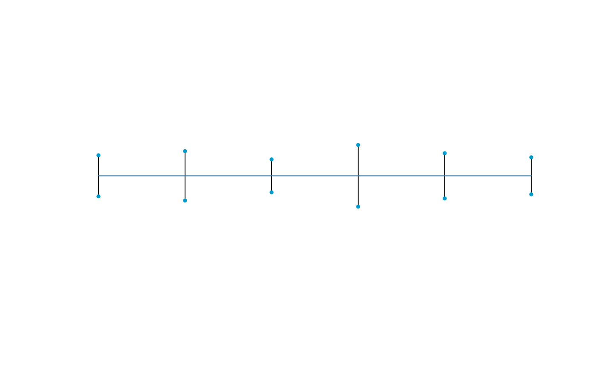
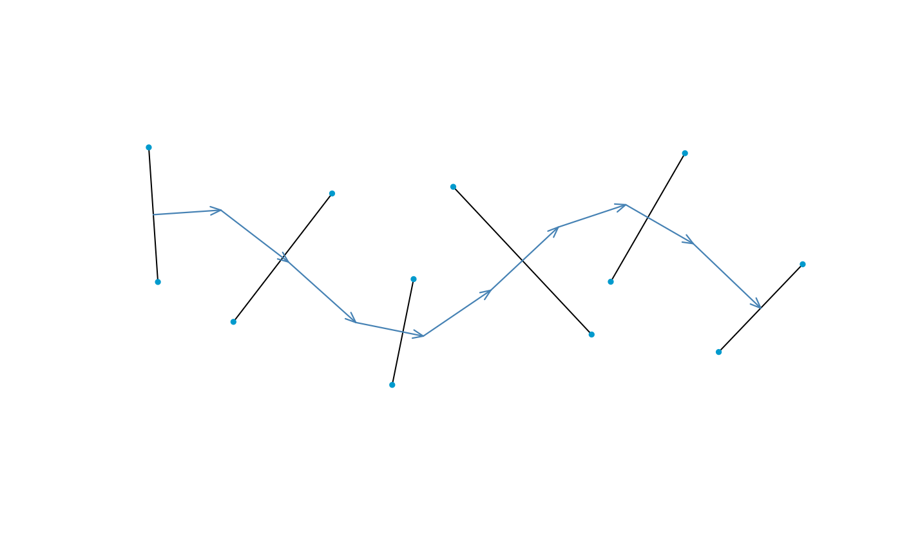
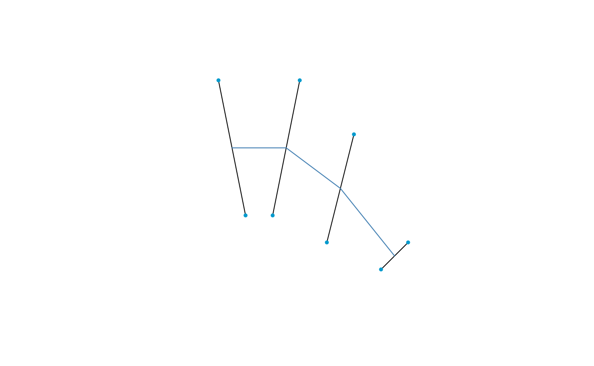
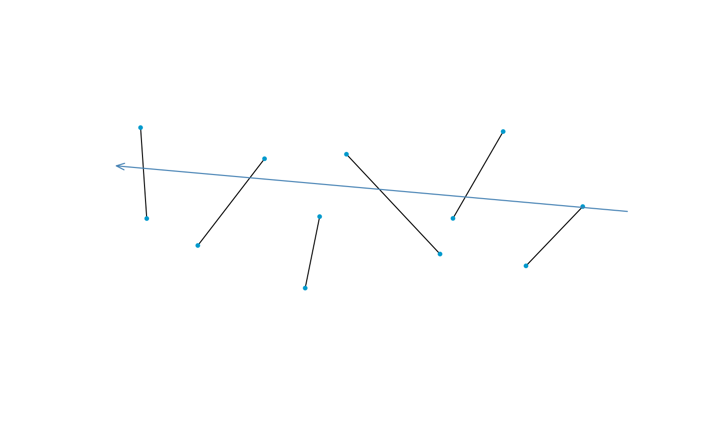
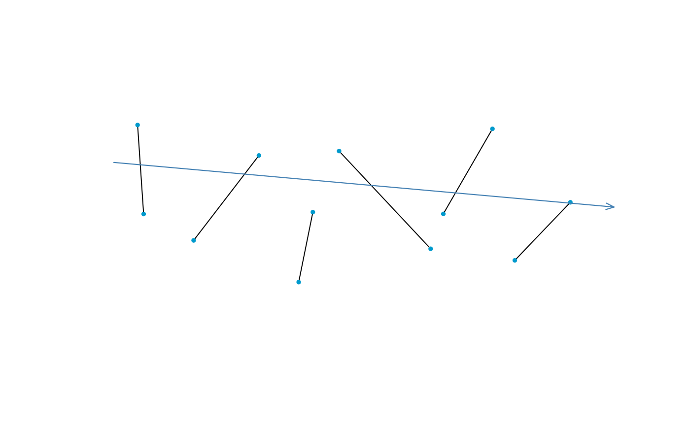
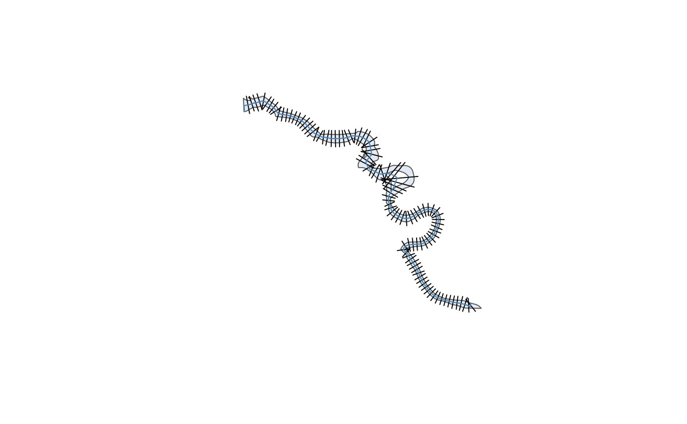

Getting Started with Channels
2026-06-03
basic_channels.RmdChannel objects are encoded as a list of cross sections. This vignette covers the simple case where cross sections are only planimetric – that is, they are line segments arranged on a map. Profile geometries are also allowed; see the Channels with Profiles vignette to see how.
Creating Channels by Hand
The simplest way to make a channel is by specifying a vector of widths. This is useful when the spatial layout of the channel is not important, for example.
widths <- c(10, 12, 8, 15, 11, 9)
channel1 <- xt_as_channel(widths)
plot(channel1)
There are two main objects in this package:
- A cross section (object of class
"xsection") - A channel (object of class
"xchan")
A cross section is a linear slice across a river channel, and in this package, is spatially encoded through a planimetric (“plan”) view and, optionally, a profile view.
A channel is a list of cross sections, optionally strung together along a channel axis like a centerline.
channel1
#> xchan channel with 6 cross sections.
#> <xsection 1> 10 (-)
#> <xsection 2> 12 (-)
#> <xsection 3> 8 (-)
#> <xsection 4> 15 (-)
#> <xsection 5> 11 (-)
#> <xsection 6> 9 (-)You could also string those cross sections along a channel axis for a
bit more spatial realism. This axis should be encoded as an
sfc or sfg object from the sf
package.
axis <- sf::st_linestring(
matrix(c(1:10 * 5, 5 * sin(1:10)), ncol = 2),
dim = "XY"
)
axis
#> LINESTRING (5 4.207355, 10 4.546487, 15 0.7056, 20 -3.784012, 25 -4.794621, 30 -1.397077, 35 3.284933, 40 4.946791, 45 2.060592, 50 -2.720106)String the original widths along the axis; this time, we’ll also view the flow direction.
channel2 <- xt_as_channel(widths, axis = axis)
plot(channel2, axis = "arrows")
For more control, you could specify your own cross sections as
bespoke line segments. As usual, make sure these are encoded up as
objects with the sf package,
this time as sfc objects.
library(sf)
#> Linking to GEOS 3.12.1, GDAL 3.8.4, PROJ 9.4.0; sf_use_s2() is TRUE
lines <- list(
st_linestring(matrix(c(-2, -1, 5, 0), ncol = 2)),
st_linestring(matrix(c(1, 0, 5, 0), ncol = 2)),
st_linestring(matrix(c(3, 2, 3, -1), ncol = 2)),
st_linestring(matrix(c(5, 4, -1, -2), ncol = 2))
)
lines_sfc <- st_sfc(lines)
lines_sfc
#> Geometry set for 4 features
#> Geometry type: LINESTRING
#> Dimension: XY
#> Bounding box: xmin: -2 ymin: -2 xmax: 5 ymax: 5
#> CRS: NA
#> LINESTRING (-2 5, -1 0)
#> LINESTRING (1 5, 0 0)
#> LINESTRING (3 3, 2 -1)
#> LINESTRING (5 -1, 4 -2)
channel3 <- xt_as_channel(lines_sfc)
plot(channel3)
Note that an axis is automatically generated in the direction based on the order the cross sections appear in; if this results in a strange axis, or your line segments are not in order, it’s a good idea to take more control of the channel axis – see the Channel Axes section.
Creating Channels from Spatial Data
plot(squamish_bankline)Cross sections can be auto-generated from the bankline polygon. You
can specify the cross section spacing directly (spacing),
or by the desired number of cross sections (n). Unlike
xt_as_channel(), which converts cross-section-like objects
into cross sections, xt_generate_plan() uses an unrelated
object – the bankline polygon – to generate cross sections.
squamish <- xt_generate_plan(squamish_bankline, spacing = 500)
plot(squamish)
The algorithm for creating cross sections works by sampling points along a channel axis, and connecting the two banks according to the shortest distance. If no axis is supplied, a centerline is delineated using the centerline package. If islands are present, they are ignored when calculating bank-to-bank span; however, the island banks are encoded in the cross sections so that wetted width can be determined (see the Channel Computations vignette for more).
It’s worth noting that the algorithm method may produce crossing cross sections. If that’s a problem, consider hand picking the cross section locations along the channel axis, or remove the problematic cross sections. For example, remove the first two cross sections, which appear to be artifacts of the sampling procedure.
squamish[1:2] <- NULLChannel Axes
All channels must have an axis. This provides two main structural components to the channel.
- It controls flow direction, so that a left and right bank can be identified.
- It determines cross section ordering.
In addition, many channel computations rely heavily on the channel axis – see the Channel Computations vignette for more.
Running a new axis along the cross sections updates the direction of
flow. This is demonstrated below with a new axis directing
channel2.
new_axis <- st_linestring(matrix(c(58, 2, 0, 5), ncol = 2))
xt_axis(channel2) <- new_axisThis channel now flows towards the left, the opposite of its previous flow.
plot(channel2, axis = "arrows")
You can also reverse the flow direction directly. This is especially
useful when generating cross sections with
xt_generate_plan(), in case the algorithm gets the
direction wrong.
channel2 <- xt_reverse_flow(channel2)
plot(channel2, axis = "arrows")
It’s important to note that, while a channel is just a list of cross
sections, the order of the cross sections in the list does not influence
flow order! Try it yourself: does channel2[c(2, 3, 1)]
change the flow direction and order? The importance of this decoupling
is discussed later when cross sections are placed in a data frame.
Channel Data Frames
Of course, a river is more than its geometry. Any number of characteristics could be relevant for an analysis, such as bed roughness, grain size, or even segment ID. This is why channels are lists, so that you can pair characteristics to each cross section – ideally, in a data frame.
Consider channel2, which has six cross sections. A data
frame (tibble) can be constructed to pair cross sections with their
characteristics.
tibble::tibble(
cross_section = channel2,
roughness = c(0.035, 0.035, 0.03, 0.03, 0.03, 0.025),
gradient = c(0.01, 0.01, 0.02, 0.02, 0.01, 0.01)
)
#> # A tibble: 6 × 3
#> cross_section roughness gradient
#> <xchan> <dbl> <dbl>
#> 1 <xsection> 0.035 0.01
#> 2 <xsection> 0.035 0.01
#> 3 <xsection> 0.03 0.02
#> 4 <xsection> 0.03 0.02
#> 5 <xsection> 0.03 0.01
#> 6 <xsection> 0.025 0.01While early development of xchan defined channels as tabular, the mature version only deals with the single column of cross sections because its goals are purely spatial. In addition, it’s not obvious how to support the various ways in which operations can be conducted on a table, like expanding joins or split-apply-combine strategies often used in dplyr-like workflows.
Channel Bankline
Like the channel axis, a channel bankline is also stored with a channel object, as an attribute. However, this attribute is optional, and is only included for convenience. For example, when present, it can be included in a plot.
You can get and set a bankline polygon with
xt_bankline(). Here is the polygon that was used to create
the spatially-derived channel in the previous example.
xt_bankline(squamish)
#> Geometry set for 1 feature
#> Geometry type: POLYGON
#> Dimension: XY
#> Bounding box: xmin: 1193827 ymin: 540227.2 xmax: 1199753 ymax: 545514
#> Projected CRS: NAD83 / BC Albers
#> POLYGON ((1199363 540233.6, 1199335 540240.4, 1...You can also specify the bankline polygon directly whenever coercing
with xt_as_channel().
Channel Widening
The xt_widen() function allows you to widen (erode) a
channel. Here is the Squamish River widened by 200 units (meters, in
this case).

By default, erosion occurs evenly on both sides. While you can erode
the left bank with side = "left" and the right bank with
side = "right", you can also control the distribution
between left and right banks by a side_ specifier:
side_both(), side_left(), and
side_right(). All three functions do the same thing
(specify allocation between left and right banks), but provide a
different approach to this specification.
For example, here is a 70-30 left-right split of erosion.
squamish3 <- xt_widen(squamish, dw = 200, side = side_left(0.7))
xt_width(squamish3)
#> Units: [m]
#> [1] 334.5391 334.1180 328.8095 407.5271 408.5275 431.7100 356.1819 498.2928
#> [9] 674.6790 259.9702 353.1611 312.8921 294.9426 308.4606 316.3619 289.5777
#> [17] 304.4440 293.3547 279.0400 362.0860Currently only a single proportion is allowed; a future version of xchan aspires to allow varying proportions along the channel length.
Exporting Channels
You can export the channel as an object understood by the sf package; the channel will be a series of line segments. If there are islands, you have the option of excluding them, resulting in multi-line segments spanning the wet part of the channel.